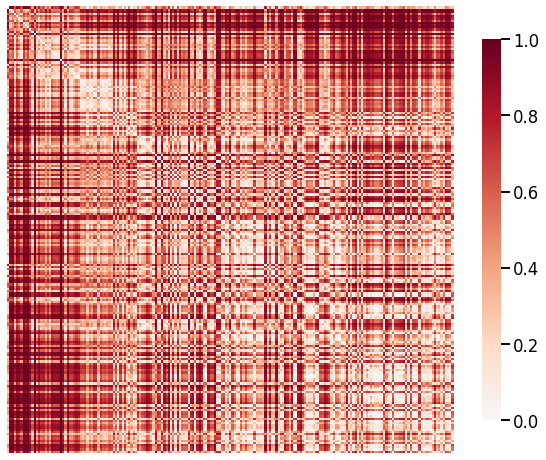

Replicating Figures from Paper
Replicating Figures from Paper¶
We attempted to replicate the following figure from the MaMI paper using the laplacian spectral kernel we constructed.

### import modules
from graspologic.plot import heatmap
import numpy as np
import random
import pandas as pd
### load data
from pathlib import Path
graphs_all = np.zeros((225, 200, 200))
species_list = []
npy_files = Path('../mami_data/conn').glob('*')
for i, file in enumerate(npy_files):
graphs_all[i] = np.load(file)
filestr = str(file).split('/')[-1]
filestr = filestr.split('.')[0]
species_list.append(filestr)
random.seed(3)
# construct labels based on taxonomy orders
info_df = pd.read_csv('../mami_data/info.csv')
filenames = info_df.pop("Filename").to_list()
orders_all = info_df.pop("Order").to_list()
#print(orders_all)
order_mapper = {}
for i, filename in enumerate(filenames):
if orders_all[i] == 'Artiodactyla':
orders_all[i] = 'Cetartiodactyla'
order_mapper[filename] = orders_all[i]
labels_all = list(map(order_mapper.get, species_list))
# get subset of labels, graphs
#orders = ['Chiroptera', 'Primates']
orders = ['Chiroptera', 'Rodentia', 'Cetartiodactyla', 'Carnivora', 'Perissodactyla', 'Primates']
#ind_ch = []
#ind_pr = []
ind = []
labels = []
for i, label in enumerate(labels_all):
if label in orders:
labels.append(label)
ind.append(i)
#if label == 'Chiroptera':
#labels.append(label)
#ind_ch.append(i)
#elif label == 'Primates':
#labels.append(label)
#ind_pr.append(i)
#ind_ch_samp = random.sample(ind_ch, len(ind_ch)//2)
#ind_pr_samp = random.sample(ind_pr, len(ind_pr)//2)
#ind = ind_ch_samp + ind_pr_samp
#ind.sort()
graphs = graphs_all[ind]
#labels = list(np.array(labels_all)[ind])
mapper = {}
for i, label in enumerate(set(labels)):
mapper[label] = i
y = list(map(mapper.get, labels))
print(len(labels))
print(len(y))
203
203
from graspologic.utils import pass_to_ranks, to_laplacian
from sklearn.neighbors import KernelDensity
from scipy.spatial.distance import cosine
from scipy.sparse.csgraph import laplacian
def laplacian_dissim(graphs, transform: str=None, metric: str='l2', smooth_eigvals: bool=False, \
normalize=True):
if transform == 'pass-to-ranks':
for i, graph in enumerate(graphs):
graph = pass_to_ranks(graph)
graphs[i] = graph
elif transform == 'binarize':
graphs[graphs != 0] = 1
elif transform == None:
graphs = graphs
else:
print('Supported transformations are "pass-to-ranks", "binarize", or None.')
eigs = []; ws = []
for i, graph in enumerate(graphs):
# calculate laplacian
lap = to_laplacian(graph, 'I-DAD')
#lap = laplacian(graph, normed=True)
# find and sort eigenvalues
w = np.linalg.eigvalsh(lap)
ws.append(w)
if not np.all(np.real(w)):
print('Complex eigenvalues.')
w = np.sort(w)
if smooth_eigvals:
kde = KernelDensity(kernel='gaussian', bandwidth=0.015).fit(w[:, None])
#kde = KernelDensity(kernel='gaussian', bandwidth=0.015).fit(w.reshape(-1, 1))
xs = np.linspace(0, 2, 2000)
#xs = xs[:, np.newaxis]
log_dens = kde.score_samples(xs[:, None])
eigs.append(np.exp(log_dens))
else:
eigs.append(w)
dissim_matrix = np.zeros((len(graphs), len(graphs)))
for i, eig1 in enumerate(eigs):
for j, eig2 in enumerate(eigs):
if metric == 'cosine':
diff = cosine(eig1, eig2)
elif metric == 'l1':
diff = np.linalg.norm(eig1 - eig2, ord=1)
elif metric == 'l2':
diff = np.linalg.norm(eig1 - eig2, ord=2)
dissim_matrix[i, j] = diff
if normalize:
dissim_matrix = dissim_matrix / np.max(dissim_matrix)
return dissim_matrix, eigs, ws
scaled_lap_dissim, eigs, ws = laplacian_dissim(graphs, transform='binarize', metric='cosine', smooth_eigvals=True, normalize=True)
#transformed = pass_to_ranks(scaled_lap_dissim, method='simple-all')
ax = heatmap(scaled_lap_dissim, context="talk", inner_hier_labels=labels, hier_label_fontsize=10)
# try different normalizing
# log, pass-to-rank
ax.figure.set_facecolor('w')
#lap = to_laplacian(graphs[0], 'I-DAD')
#lap = laplacian(graph, normed=True)
# find and sort eigenvalues
#w = np.linalg.eigvalsh(lap)
##if not np.all(np.real(w)):
#print('Complex eigenvalues.')
xs = np.linspace(0, 2, 2000)
plt.figure(facecolor='w')
plt.plot(xs, eigs[0])
plt.plot(xs, eigs[5])
plt.xlabel('Eigenvalue')
print(cosine(eigs[0], eigs[5])) # cosine difference
area = np.trapz(eigs[5], dx=0.001)
print("area =", area) # area under the curve, should be 1
0.01685564001614115
area = 0.9970012499994536

plt.figure(facecolor='w')
ax = sns.kdeplot(ws[0])
ax = sns.kdeplot(ws[5])
ax.set_xlabel('Eigenvalue')
Text(0.5, 0, 'Eigenvalue')
values, counts = np.unique(np.array(labels), return_counts = True)
val_counts_dict = {}
for i, value in enumerate(values):
val_counts_dict[value] = counts[i]
#counts_sorted = np.flip(np.sort(counts))
values_sorted = ['Chiroptera', 'Rodentia', 'Cetartiodactyla', 'Carnivora', 'Perissodactyla', 'Primates']
counts_sorted = []
for value in values_sorted:
counts_sorted.append(val_counts_dict[value])
labels_sorted = list(np.repeat(values_sorted, counts_sorted))
print(labels_sorted)
graphs_sorted = []
for i, label in enumerate(labels_sorted):
idx = labels.index(label)
labels[idx] = 0
graphs_sorted.append(graphs[idx])
graphs_sorted = np.array(graphs_sorted)
print(np.shape(graphs_sorted))
['Chiroptera', 'Chiroptera', 'Chiroptera', 'Chiroptera', 'Chiroptera', 'Chiroptera', 'Chiroptera', 'Chiroptera', 'Chiroptera', 'Chiroptera', 'Chiroptera', 'Chiroptera', 'Chiroptera', 'Chiroptera', 'Chiroptera', 'Chiroptera', 'Chiroptera', 'Chiroptera', 'Chiroptera', 'Chiroptera', 'Chiroptera', 'Chiroptera', 'Chiroptera', 'Chiroptera', 'Chiroptera', 'Chiroptera', 'Chiroptera', 'Chiroptera', 'Chiroptera', 'Chiroptera', 'Rodentia', 'Rodentia', 'Rodentia', 'Rodentia', 'Rodentia', 'Rodentia', 'Rodentia', 'Rodentia', 'Rodentia', 'Rodentia', 'Rodentia', 'Rodentia', 'Rodentia', 'Rodentia', 'Rodentia', 'Rodentia', 'Rodentia', 'Rodentia', 'Rodentia', 'Rodentia', 'Rodentia', 'Rodentia', 'Rodentia', 'Rodentia', 'Rodentia', 'Rodentia', 'Rodentia', 'Rodentia', 'Rodentia', 'Cetartiodactyla', 'Cetartiodactyla', 'Cetartiodactyla', 'Cetartiodactyla', 'Cetartiodactyla', 'Cetartiodactyla', 'Cetartiodactyla', 'Cetartiodactyla', 'Cetartiodactyla', 'Cetartiodactyla', 'Cetartiodactyla', 'Cetartiodactyla', 'Cetartiodactyla', 'Cetartiodactyla', 'Cetartiodactyla', 'Cetartiodactyla', 'Cetartiodactyla', 'Cetartiodactyla', 'Cetartiodactyla', 'Cetartiodactyla', 'Cetartiodactyla', 'Cetartiodactyla', 'Cetartiodactyla', 'Cetartiodactyla', 'Cetartiodactyla', 'Cetartiodactyla', 'Cetartiodactyla', 'Cetartiodactyla', 'Cetartiodactyla', 'Cetartiodactyla', 'Cetartiodactyla', 'Cetartiodactyla', 'Cetartiodactyla', 'Cetartiodactyla', 'Cetartiodactyla', 'Cetartiodactyla', 'Cetartiodactyla', 'Cetartiodactyla', 'Cetartiodactyla', 'Cetartiodactyla', 'Carnivora', 'Carnivora', 'Carnivora', 'Carnivora', 'Carnivora', 'Carnivora', 'Carnivora', 'Carnivora', 'Carnivora', 'Carnivora', 'Carnivora', 'Carnivora', 'Carnivora', 'Carnivora', 'Carnivora', 'Carnivora', 'Carnivora', 'Carnivora', 'Carnivora', 'Carnivora', 'Carnivora', 'Carnivora', 'Carnivora', 'Carnivora', 'Carnivora', 'Carnivora', 'Carnivora', 'Carnivora', 'Carnivora', 'Carnivora', 'Carnivora', 'Carnivora', 'Carnivora', 'Carnivora', 'Carnivora', 'Carnivora', 'Carnivora', 'Carnivora', 'Carnivora', 'Carnivora', 'Carnivora', 'Carnivora', 'Carnivora', 'Carnivora', 'Carnivora', 'Carnivora', 'Carnivora', 'Carnivora', 'Carnivora', 'Carnivora', 'Carnivora', 'Perissodactyla', 'Perissodactyla', 'Perissodactyla', 'Perissodactyla', 'Perissodactyla', 'Perissodactyla', 'Perissodactyla', 'Primates', 'Primates', 'Primates', 'Primates', 'Primates', 'Primates', 'Primates', 'Primates', 'Primates', 'Primates', 'Primates', 'Primates', 'Primates', 'Primates', 'Primates', 'Primates', 'Primates', 'Primates', 'Primates', 'Primates', 'Primates', 'Primates', 'Primates', 'Primates', 'Primates', 'Primates', 'Primates', 'Primates', 'Primates', 'Primates', 'Primates', 'Primates', 'Primates', 'Primates', 'Primates', 'Primates', 'Primates', 'Primates', 'Primates', 'Primates', 'Primates', 'Primates', 'Primates', 'Primates', 'Primates', 'Primates']
(203, 200, 200)
# confirm graphs are in correct order
scaled_lap_dissim_sorted, eigs, ws = laplacian_dissim(graphs_sorted, transform='binarize', metric='cosine', smooth_eigvals=True, normalize=True)
ax = heatmap(scaled_lap_dissim_sorted, transform='zero-boost', context="talk")
ax.figure.set_facecolor('w')

#scaled_lap_dissim_sorted_transformed = pass_to_ranks(scaled_lap_dissim_sorted, method='zero-boost')
dissim_median = np.zeros((6, 6))
labels_sorted = np.array(labels_sorted)
for i, label1 in enumerate(values_sorted):
for j, label2 in enumerate(values_sorted):
#mask = ~((labels_sorted[:, None] == label1) & (labels_sorted[ None, :] == label2))
mask = (labels_sorted[:, None] == label1) & (labels_sorted[ None, :] == label2)
#subset = np.ma.array(scaled_lap_dissim_sorted_transformed, mask=mask)
dissim_median[i, j] = np.median(scaled_lap_dissim_sorted[mask])
dissim_median_transformed = pass_to_ranks(dissim_median, method='zero-boost')
#dissim_median = dissim_median / np.max(dissim_median)
import seaborn as sns
import matplotlib.pyplot as plt
mask = np.tril(np.ones_like(dissim_median), -1)
plt.figure(facecolor='w')
cmap = sns.cubehelix_palette(as_cmap=True)
ax = sns.heatmap(dissim_median, mask=mask, annot=True, vmin=0, cmap=cmap)
ax.set_yticklabels(values_sorted, rotation=0)
ax.set_xticklabels(values_sorted, rotation=45)
plt.savefig('mami_repfigure.jpg', bbox_inches='tight')